General-purpose tools stop being useful exactly where the interesting data begins. We build the algorithms that carry on past that line.
Trask Technology builds custom components for low-latency storage, retrieval and analysis of complex data at scale. The work is shaped around how the machine actually behaves — memory layout, cache behaviour, the real cost of a random access — and written in Rust.
Our current research is in online advertising, where the data is behavioural, the graphs are large and the answer is due in milliseconds. Little of what we learn there is specific to it: the same methods hold wherever structure and scale matter more than convenience.

Tell us the shape of your graph. We will tell you what it takes.